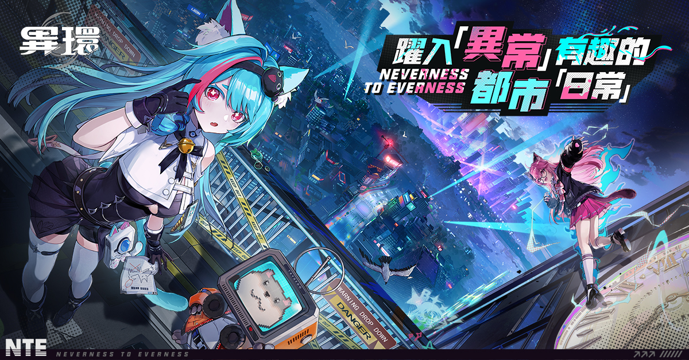
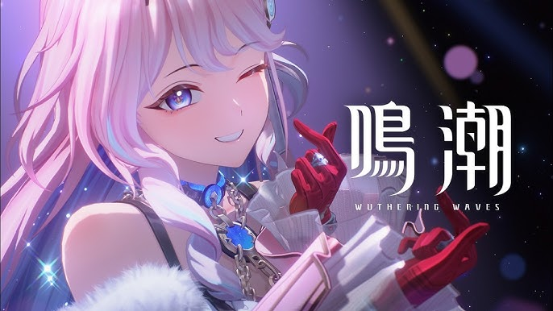

興趣
研究天體物理學
天體物理學真的很有趣，雖然一些公式看起來很複雜，但那都是解釋行星運行，能量轉換，以及生命現象的表達方式
我覺得了解宇宙，就會讓人類更了解整個歷史
程式碼堆積出生活中所有的數位系統，雖然很討厭，但沒有程式碼，世界將會崩潰
除了研究全端開發與資料庫管理，我平時也喜歡探索各種很酷的東西
天體物理學真的很有趣，雖然一些公式看起來很複雜，但那都是解釋行星運行，能量轉換，以及生命現象的表達方式
我覺得了解宇宙，就會讓人類更了解整個歷史
沒有音樂，世界會很無趣，就如同電腦，沒有程式碼一樣
遊戲是我放鬆的來源，遊玩遊戲可以讓我在寫完超多Bug的程式碼後，能舒展身心!
喜歡在洛聖都中體驗豐富的線上生活與各種改裝車輛，這款遊戲的介面與載入流程也是我研究用戶體驗的參考對象之一

這是一款充滿歡樂的遊戲，有獨特的視覺風格與開放世界設計，這是新遊戲，我喜歡在空閒時間體驗都市樂趣

這是我最近才入坑的遊戲，(為了達妮婭!!!)，劇情非常強的遊戲，但是是經典的拯救世界的題材，這是我覺得還好的地方，但劇情呈現方式真的很強，我覺得比玩法還強!
規劃、管理、成長。我享受從無到有建立起一個體系的成就感。